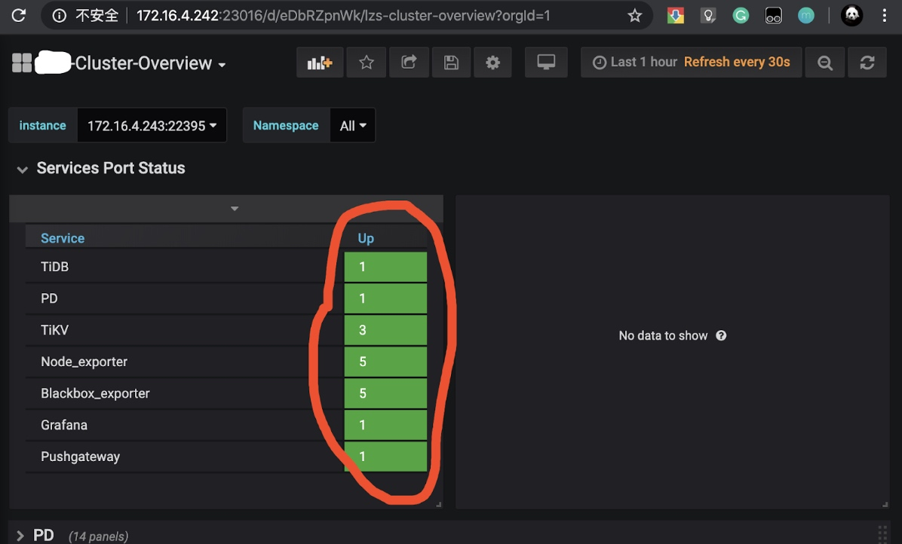
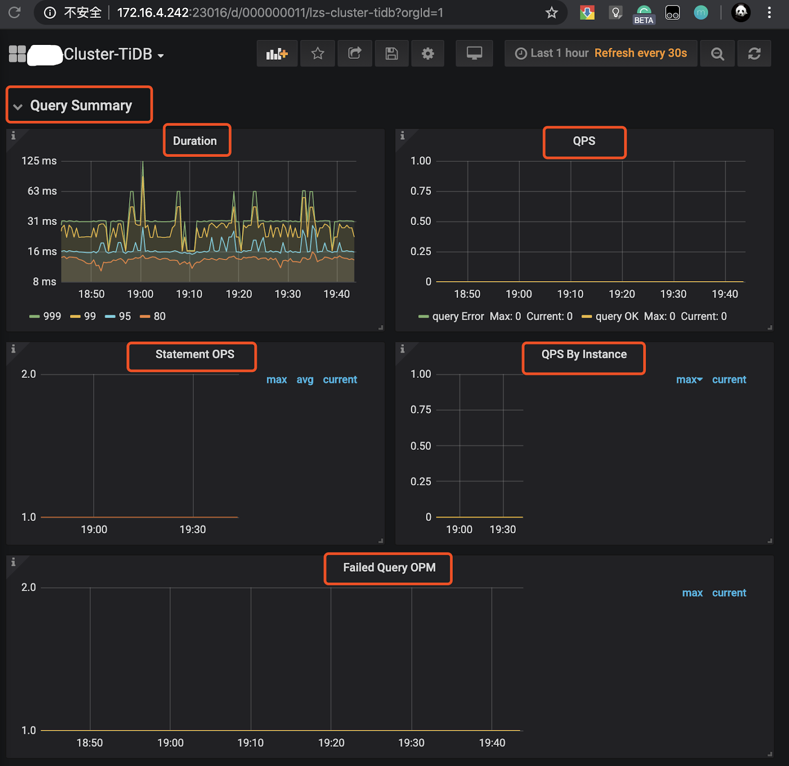

01 Release-2.1 升级到 Release-3.0 线上集群升级
李仲舒 2020 年 2 月 10 日
一、背景 / 目的
分布式数据库集群运维过程有一定的复杂性和繁琐性，3.0 版本是目前被广泛使用的版本，相比 2.1 有大幅度增加性能，以及很多新增的功能和特性，整体架构、配置也有较大的优化。该篇根据广大用户的升级经验，尽可能将 Release-2.1 升级到 Release-3.0 的准备工作、升级过程中注意事项、升级后重点关注列举详细，做到防患于未然。为 Release-3.0 版本的优秀特性和产品性能在业务场景中广泛使用提供文档依托。
适用人群默认为熟悉 2.1 版本的使用，但是没有做过大版本升级。
二、操作前的 Check 项
2.1 备份原集群修改过的 TiDB、TiKV 和 PD 参数
创建临时目录，备份升级前的参数配置
mkdir -p /tmp/tidb_update_3.0/conf
mkdir -p /tmp/tidb_update_3.0/group_vars
确认并备份 tidb-ansible/conf/tidb.yml 中的参数
$cat tidb.yml |grep -v "#" |grep -v ^$ > /tmp/tidb_update_3.0/conf/tidb.yml
$cat /tmp/tidb_update_3.0/conf/tidb.yml
... 配置展示省略 ...
确认并备份 tidb-ansible/conf/tikv.yml 中的参数
$cat tikv.yml |grep -v "#" |grep -v ^$ > /tmp/tidb_update_3.0/conf/tikv.yml
$cat /tmp/tidb_update_3.0/conf/tikv.yml
... 配置展示省略 ...
确认并备份 tidb-ansible/conf/pd.yml 中的参数
$cat pd.yml |grep -v "#" |grep -v ^$ > /tmp/tidb_update_3.0/conf/tidb.yml
$cat /tmp/tidb_update_3.0/conf/pd.yml
... 配置展示省略 ...
确认并备份 PD 集群中 etcd 记录的 PD 配置信息
$cd tidb-ansible/resource/bin/
$./pd-ctl -u "http://{pd-ip}:{pd_client_port}" config show all > /tmp/tidb_update_3.0/conf/pd.json
$cat /tmp/tidb_update_3.0/conf/pd.json
... 配置展示省略 ...
确认并备份 TiDB、TiKV、PD、Grafana、Prometheus 等组件的组参数的变化，尤其是端口的变化
$cd tidb-ansible/group_vars
$ll |awk '{print $9}'|grep -v ^$
alertmanager_servers.yml
all.yml
drainer_servers.yml
grafana_servers.yml
importer_server.yml
lightning_server.yml
monitored_servers.yml
monitoring_servers.yml
pd_servers.yml
pump_servers.yml
tidb_servers.yml
tikv_servers.yml
$cp *.yml /tmp/tidb_update_3.0/group_vars/
三、升级前的注意事项
3.1 查看 TiDB 的 Release Notes
以 v3.0.9 Release Notes 为例，通过Release Notes了解做了那些优化或者修复了哪些 bug。
3.2 升级 3 个注意、2 个不支持、1 个用户
注意通知业务，升级期间可能会有偶尔的性能抖动，PD leader 升级可能会有 3s 的影响；
注意预估升级时间 = tikv 个数 * 5 min（默认是 transfer leader 时间） + 10 min，滚动升级 TiKV 时间较长；
注意通知业务升级过程禁止操作 DDL，最好过一次完整的数据冷备份，通过 MyDumper 导出业务库；
整个升级过程不支持版本回退，目前未出现升级失败需要回退案例;
升级过程中不支持 DDL 操作，否则会有未定义问题，最终导致升级异常，影响业务；
升级操作通过中控机的 TiDB 管理用户完成，默认是 “tidb” 用户。
四、操作步骤
4.1 下载最新版的 v3.0.x 版本的 tidb-ansible
对应的 TAG 可以查看 Github 中的 tidb-ansible 项目，以 v3.0.9 为例，注意设置目录别名 “tidb-ansible-v3.0.9”
git clone -b v3.0.9 https://github.com/pingcap/tidb-ansible.git tidb-ansible-v3.0.9
tidb-ansible-v3.0.9 几个特殊的地方：
关于新增的
excessive_rolling_update.yml和rolling_update.yml的关系。如果部署采用 （默认）systemd 模式 ，使用
excessive_rolling_update.yml来进行滚动升级操作，原因是涉及到 PD 滚动升级（以 v3.0.9 为例）的代码变动，该脚本仅本次升级使用一次，以后再次升级到后续版本均由rolling_update.yml来完成。$ cat inventory.ini|grep supervision # process supervision, [systemd, supervise] process_supervision = systemd如果采用 supervise 模式，依然使用 rolling_update.yml 来进行滚动升级操作。
$ cat inventory.ini|grep supervision # process supervision, [systemd, supervise] process_supervision = supervise
新增 config check （以 v3.0.9 为例）,主要检查参数配置语法正确性。
## 代码块
- name: Pre-check PD configuration
hosts: pd_servers[0]
tags:
- pd
roles:
- check_config_pd
- name: Pre-check TiKV configuration
hosts: tikv_servers[0]
tags:
- tikv
roles:
- check_config_tikv
- name: Pre-check TiDB configuration
hosts: tidb_servers[0]
tags:
- tidb
roles:
- check_config_tidb
4.2 更新 ansible 及依赖组件版本
# 验证版本是否符合要求
# 版本要求
$cat ./requirements.txt
ansible==2.7.11
jinja2>=2.9.6
jmespath>=0.9.0
# 检查版本
$ansible --version
$pip show jinja2
$pip show jmespath
# 卸载重新安装
# 卸载组件
$sudo pip uninstall ansible -y
$sudo pip uninstall jinja2 -y
$sudo pip uninstall jmespath -y
# 安装组件
$sudo pip install -r ./requirements.txt
4.3 编辑新 ansible 的 inventory.ini 和 配置
参考原始 inventory.ini 编辑新 inventory.ini
$cd tidb-ansible-v3.0.9
# 按照 tidb-ansible/inventory.ini 配置
$vi inventory.ini
注意
不要直接 cp 或者 mv 方式覆盖新的 inventory.ini 文件，建议将备份的原 tidb-ansible 的 inventory.ini 的配置参数通过复制、黏贴的方式将参数填写到新的 tidb-ansible 的 inventory.ini 配置文件中。另外注意以下几点：
- TiKV 单机多实例
- TiKV 多实例部署时，必须添加 tikv_status_port 参数，同机上的多个实例注意区分端口，否则会造成监控缺失。 【功能介绍】监控数据到 Prometheus 从 push 模式调整为 pull 模式，TiKV 的启动脚本
run_tikv.sh需要配置tikv_status_port，需要在 inventory.ini 的[tikv_servers]主机组下的目标实例配置中添加参数tikv_status_port，通过滚动升级才会将参数写入到run_tikv.sh中。
```yml
vi tidb-ansible/inventory.ini
...省略上部分参数...
[tikv_servers]
TiKV1-1 ansible_host=172.16.10.4 deploy_dir=/data1/deploy tikv_port=20171 tikv_status_port=20181 labels="host=tikv1"
TiKV1-2 ansible_host=172.16.10.4 deploy_dir=/data2/deploy tikv_port=20172 tikv_status_port=20182 labels="host=tikv1"
...省略下部分参数...
```
label 设置是否正确：
[tikv_servers]主机组配置中同台主机多实例设置为相同的 host label ；[pd_servers:vars]下的locations_labels是否正确设置为locations_labels = [“host”]；
enable_binlog是否开启 ,如果设置为True，升级过程中 Pump Server 会跟滚动升级操作一起升级，Drainer Server 需要单独完成升级操作。deploy_dir和指定的参数（例如：端口、IP、别名）配置是否正确。
4.4 编辑 group_vars 文件
注意
不要直接 cp 或者 mv 方式覆盖新的
group_vars目录下的 yml 文件，建议将原来group_vars下的 yml 文件分别和新的group_vars目录下的 yml 文件的配置参数对比，如果之前有做过参数调整，修改新的配置文件；如果默认的配置，可以忽略这个步骤。
#按照 /tmp/tidb_update_3.0/group_vars 手动修改过的参数进行修改，如果没有变动，按照默认的配置。
$cd tidb-ansible-v3.0.9/group_vars
4.5 编辑 conf 文件
注意
不要直接 cp 或者 mv 方式覆盖新的 conf 目录下的 yml 文件，建议对比 /tmp/tidb_update_3.0/conf 下的 yml 配置文件 和 新的 conf 目录下的 yml 配置文件，将变化的参数进行修改，如果没有变动，按照默认的配置。另外，需要再额外关注以下几个变化的功能点的相关参数。
【功能介绍】开启共享 block-cache
storage.block-cache.capacity 默认开启共享池来自动调整，自动调整范围涵盖以下参数：rocksdb.defaultcf.block-cache-size，rocksdb.writecf.block-cache-size，rocksdb.lockcf.block-cache-size，raftdb.defaultcf.block-cache-size ，只需要在 tidb-ansible/conf/tikv.toml 设置 capacity，其他的 block-cache-size 参数不再需要手动设置。
计算方法：capacity = (MEM_TOTAL * 0.5 / TiKV 实例数量)
vi tidb-ansible/conf/tikv.yml …省略上部分参数... storage: block-cache: capacity: "1GB" …省略下部分参数...【功能介绍】开启静默 region，降低 region 心跳对 CPU 消耗 50%。
vi tidb-ansible/conf/tikv.yml ...省略上部分参数... raftstore: hibernate-regions: true ...省略下部分参数...
4.6 下载 TiDB binary
注意
该操作会从互联网中的 PingCAP 的介质服务器下载相应的版本 tar 包或者 binary 文件，下载的介质和对应的 tidb-ansible 版本一一对应，不建议版本差异化下载，例如使用 v3.0.9 的 tidb-ansible ，修改 inventory.ini 中的 tidb-version 配置，下载其他版本的 tidb binary 文件。
$cd tidb-ansible-v3.0.9
$ansible-playbook local_prepare.yml
4.7 滚动升级
注意
可以通过修改代码延长 Transfer leader 时间，来减少滚动 TiKV 过程的性能抖动。可以将 retries: 18 调整至 1800 。如果提前 transfer leader 完成以后，会停止 check ，继续下面的工作。延长 check 时间，也意味着升级时间会拉长，可以根据真实需求平衡参数。
# 以非 tls 模式为例
cd tidb-ansible-v3.0.9/common_tasks
vi add_evict_leader_scheduler.yml
...上部分代码忽略...
- name: check tikv's leader count
uri:
url: "http://{{ pd_addr }}/pd/api/v1/store/{{ store_id }}"
method: GET
return_content: yes
body_format: json
status_code: 200
register: store_info
until: (store_info.json.status.leader_count is defined and store_info.json.status.leader_count|int < 1) or store_info.json.status.leader_count is not defined
retries: 18
delay: 10
failed_when: false
when: not enable_tls|default(false)
...下部分代码忽略...
执行滚动升级脚本，顺序为 PD、TiKV、Pump、TiDB。
- systemd 模式（默认）
注意
excessive_rolling_update.yml仅限滚动升级 TiDB 集群使用一次，后面再次升级到其他版本均通过rolling_update.yml来完成。
$cd tidb-ansible-v3.0.9
$ansible-playbook excessive_rolling_update.yml
- supervise 模式
$cd tidb-ansible-v3.0.9
$ansible-playbook rolling_update.yml
- 升级如果中间步骤报错退出，处理好问题后，可以利用 --tags 和 -l 跳过前面升级完的组件，继续后面的升级。举例：在升级 TiKV1-2 时报错，依次执行执行 ：
ansible-playbook excessive_rolling_update.yml --tags=tikv -l TiKV1-2,TiKV2-1,TiKV2-2 …
ansible-playbook excessive_rolling_update.yml --tags=pump (如果没开 binlog 可忽略）
ansible-playbook excessive_rolling_update.yml --tags=tidb
升级后会开启 Region Merge，减少空 Region 和小 Region 对 CPU 消耗，由于刚升级，之前堆积的需要 merge 的量会比较多，建议先调低并发到 2：
./pd-ctl -u "http://{pd-ip}:{pd_client_port}" » config set merge-schedule-limit 2 Success!等观察 region 数量趋于稳定后，再逐渐调大到 8
./pd-ctl -u "http://{pd-ip}:{pd_client_port}"
» config set merge-schedule-limit 8
Success!
» config set replica-schedule-limit 16
Success!
4.8. 滚动升级 TiDB 监控组件
注意 该操作会将
Prometheus、Grafana、blackbox_exporter,node_exporter监控组件滚动升级，升级过程中 Grafana 页面会有一段时间不可用状态或者数据为空，看不到监控数据或者显示“no data”是预期的。
五、操作后 Check 监控项
登录 Grafana 页面 http://{grafana-ip}:{grafana-port} 用户名和密码：inventory.ini 有配置
- 查看 overview 页面，
Overview页面的Services Port Status状态是否均为绿色的 up 状态；

- 查看 TiDB 页面，
Query Summary监控栏的Duration、QPS、Statement OPS、QPS By Instance、Failed Query OPM监控项是否正常，在每个监控项左上↖️都会有一个“i” 光标放在那里会描述监控项的解释和预期情况；


查看 TiKV-Details 页面，TiKV 页面已经失效，新的监控数据主要会展示在
TiKV-Details、TiKV-Summary、TiKV-Trouble-Shooting中。可以通过 TiKV-Details 页面，通过Cluster、Error、Server确认 TiKV 实例的状态的负载以及错误情况。查看 PD 页面，查看 Cluster 监控栏中的
Storage capacity、Current storage size、Current stroage used、Normal stores、Number of Regions确认当前集群存储数据和 Region 的情况，另外添加了 PD 参数展示和 Label 状态展示的监控。

- 出现以下监控告警可能是预期的 Region Merge 操作导致的，因为 v3.0 版本的 Region Merge 效果比 v2.1 要好，所以如果开启 Region Merge 并发调度，可能短时间会出现
tikvclient_backoff_count error告警，同时 values 会逐渐减少。对业务几乎没有影响，如担心业务延迟可以现将并发调度调整为 0 ，等到业务低峰时候，再加大 Region Merge 并发度。
【样例】
TiDB tikvclient_backoff_count error
状态: 问题
cluster: xxx-cluster, instance: 172.16.1.1:10081, values:.2000000
2000000
2020-02-11 13:04
六、周边工具升级
6.1 tidb-binlog 升级
tidb-binlog 按照 tidb-ansible 部署
- pump 会更 TiDB Cluster 的滚动升级操作一同升级，升级过程对于正在增量同步的数据没有影响，升级完成以后，可以登录到目标的 pump 节点，确认 pump 的版本。
$ ./pump -V Release Version: v3.0.9 Git Commit Hash: c97e501d5054ed63c325c02b581a7c1a661cbd42 Build TS: 2020-01-14 12:53:37 Go Version: go1.13 Go OS/Arch: linux/amd64- drainer 升级需要先将 drainer 的 binary 上传至目标的节点 ${deploy_dir}/bin 目录下，注意不要覆盖原 drainer ，可以参考下面的操作。
$tidb-ansible/resources/bin $ ./drainer -V Release Version: v3.0.9 Git Commit Hash: c97e501d5054ed63c325c02b581a7c1a661cbd42 Build TS: 2020-01-14 12:53:50 Go Version: go1.13 Go OS/Arch: linux/amd64 $cp drainer drainer309 $scp drainer309 tidb@{drainer-ip}:${deploy_dir}/bin/ $ssh {drainer-ip} $cd ${deploy_dir}/scripts $./stop_drainer.sh $mv ${deploy_dir}/bin/drainer ${deploy_dir}/bin/drainer.old $mv ${deploy_dir}/bin/drainer309 ${deploy_dir}/bin/drainer $./start_drainer.sh
6.2 Tispark 升级
目前 Tispark 不能直接通过 ansible 升级
local_prepare.yml会将 Tispark 和 spark binary 下载到中控机本地目录代码块
tispark_packages: - name: spark-2.4.3-bin-hadoop2.7.tgz version: 2.4.3 url: http://download.pingcap.org/spark-2.4.3-bin-hadoop2.7.tgz checksum: "sha256:80a4c564ceff0d9aff82b7df610b1d34e777b45042e21e2d41f3e497bb1fa5d8" - name: tispark-latest.tar.gz version: latest url: http://download.pingcap.org/tispark-assembly-latest-linux-amd64.tar.gz - name: tispark-sample-data.tar.gz version: latest url: http://download.pingcap.org/tispark-sample-data.tar.gz checksum: "sha256:bd0368a9d8663a4a8de89e39cc4cc1d91c718faf36d4bc7e1f8482c34d5bb8db"下载目录
$cd tidb-ansible-v3.0.9/downloads $ ll *spark*|awk '{print $9}' spark-2.4.3-bin-hadoop2.7.tgz tispark-core-2.1.8-spark_2.4-jar-with-dependencies.jar tispark-sample-data.tar.gz $pwd /home/tidb/lzs/ansible/
升级操作和 drainer 升级操作类似
先停掉 Spark 服务
将 Tispark 的 jar 包拷贝到spark安装目录下面的 jars 子目录
启动 Spark 服务
打开master web ui:
http://${master ip}:8080，确认可以访问，确认work个数、core个数、内存数是否符合预期简单测试：
./bin/spark-shell --master spark://${master ip}:7077运行一些简单的测试命令，例如看看是否能访问tidb
七、升级常见问题
7.1 tidb-ansible 操作常见问题排查
通过 git 下载 tidb-ansible 分支和升级 TIDB 集群版本不匹配问题
- 不建议多版本混用 tidb-ansible ，目前很多逻辑支持的都是当前版本，使用 tidb-ansible 版本和 tidb 集群版本一致。通过 git clone 下载指定的 tag 分支，inventory.ini 中的 tidb-version 参数不要擅自修改。
执行
local_prepare.yml报错网络延迟高，导致部分 curl get 下载介质文件不完整或者中断报错；
下载的介质文件异常，可以根据报错找到对应的脚本未知和下载的地址，通过 curl 命令进行下载验证。
执行
rolling_update.yml报错- tikv 滚动过程中报错退出，确认具体的报错位置，查看对应的 ansible-playbook 逻辑
八、相关案例
Asktug 问题